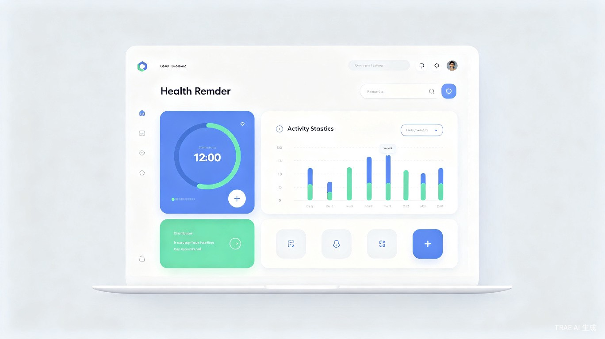
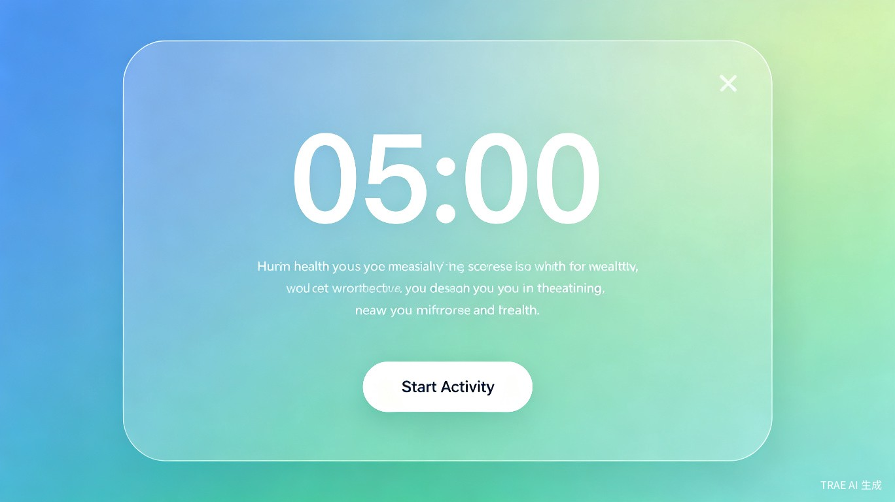
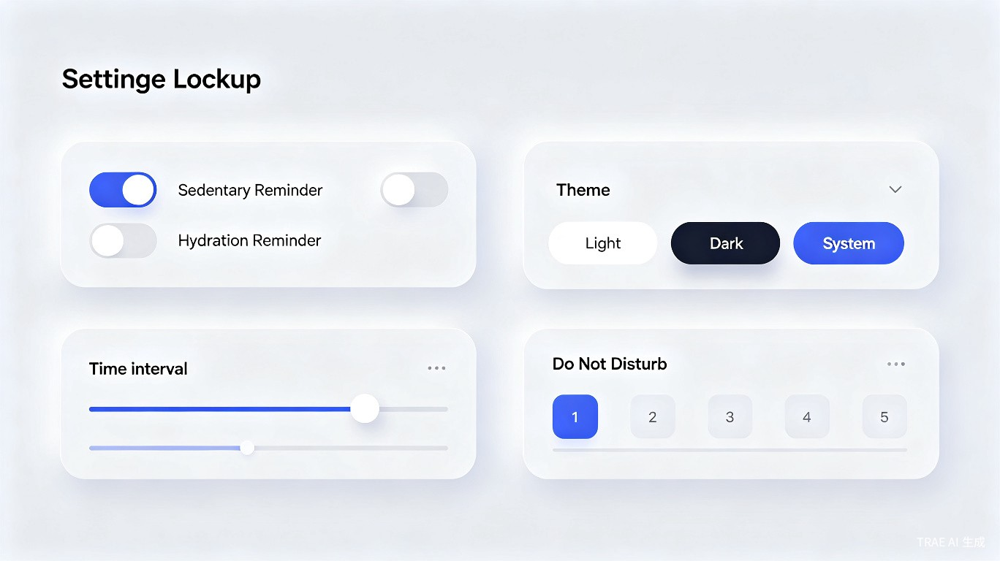
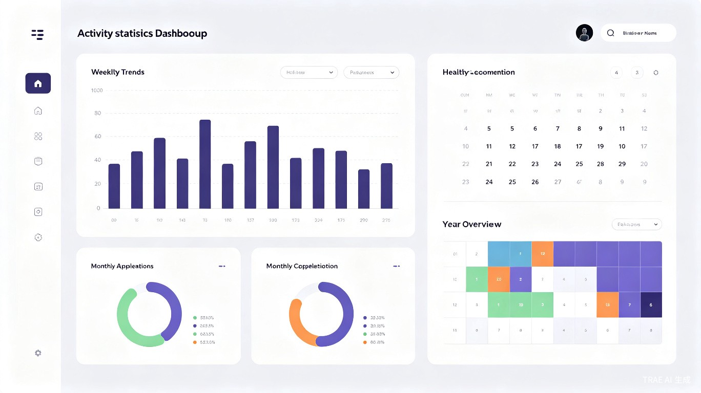

一个强制打断你工作流的健康提醒工具
去年体检，医生说我腰椎有点问题，问我是不是经常坐着不动。我回想了一下，写代码的时候确实经常一坐就是两三个小时，有时候忙起来连水都顾不上喝。回家查了查资料，发现久坐不只是腰的问题，还会影响心血管、代谢，甚至增加某些疾病的风险。
市面上有一些提醒软件，但要么功能太简单，要么界面做得不够顺手。更关键的是，很多软件的提醒方式太"温柔"——弹个通知就消失了，用户随手点掉继续坐着，根本起不到作用。
我想做一个不一样的：提醒必须是强制的。全屏弹窗，倒计时结束才能关闭，这段时间你必须站起来活动。不是那种"温馨提示"，而是真正能打断你工作流、逼你动一动的工具。




全屏弹窗提醒，倒计时强制执行，活动结束才能关闭。支持自定义提醒间隔和多条提醒文案随机显示。
核心功能独立设置页面与提醒配置，帮助养成定时喝水习惯，同样采用强制提醒机制。
支持设置多个时段，可跨午夜配置（如22:00-次日06:00），开会或赶deadline时不会被打断。
浅色、深色、跟随系统三种模式，界面风格随主题同步变化。
数据只存本地不上传，按日/周/月/年查看活动记录，图表可视化展示健康趋势。
隐私安全悬停显示状态与下次提醒时间，支持开机自启，活动结束后可选自动锁屏。
采用 Tauri 2 框架开发桌面应用，前端使用 React + TypeScript，UI组件库选用 Ant Design。
从Windows桌面应用起步，后续扩展到Mac、iOS、Android，形成跨平台产品线。
与智能穿戴设备互联，获取真实的活动数据，让提醒更加精准和个性化。
与智能灯泡、智能音箱配合，提醒时自动调节灯光或播放提示音，打造沉浸式健康提醒体验。
面向企业提供员工健康管理方案，批量部署、数据汇总、健康报告生成。